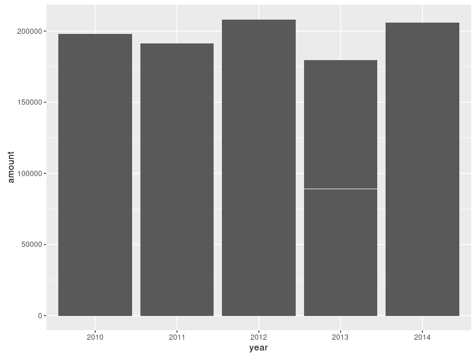
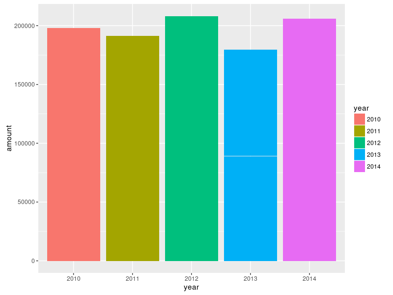
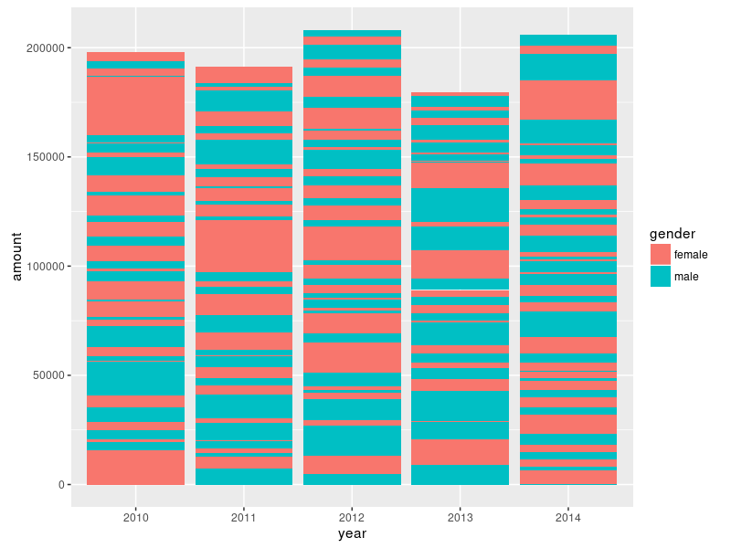
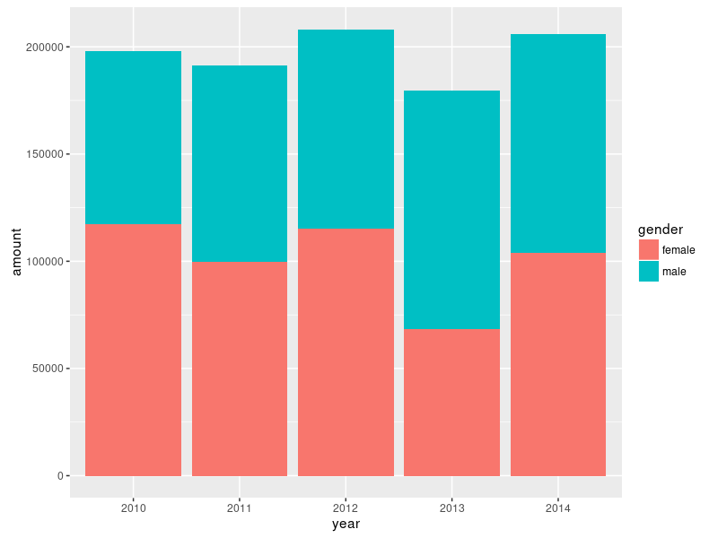
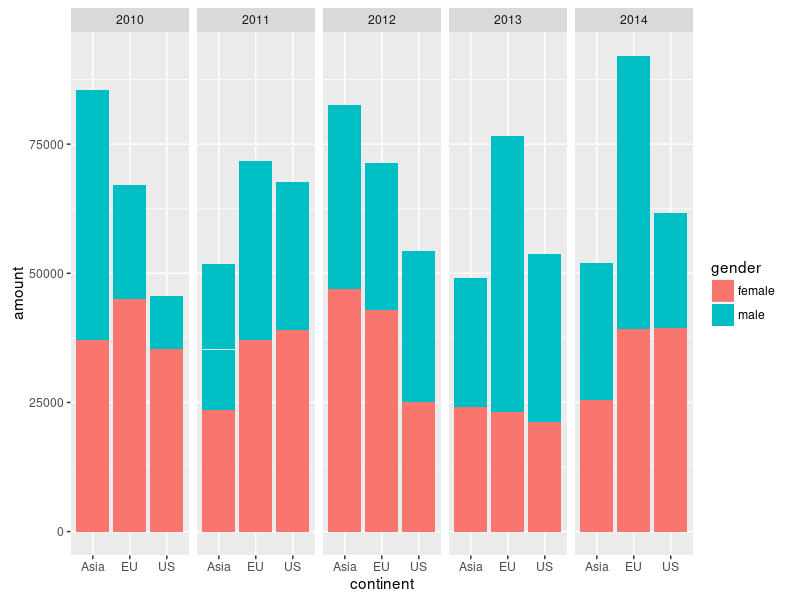
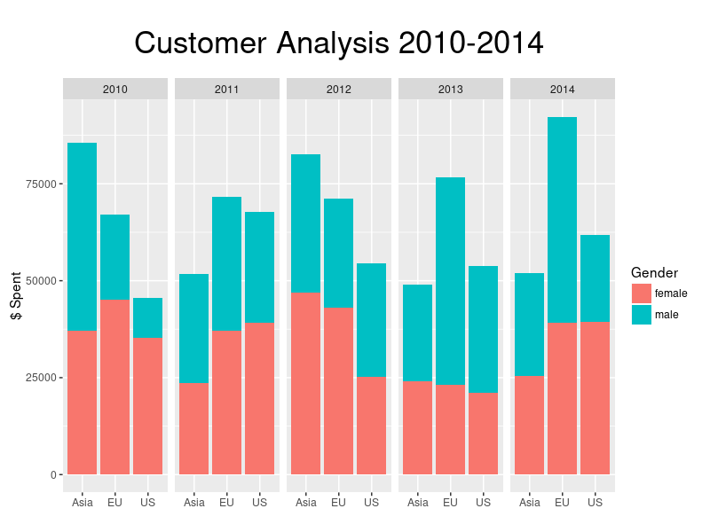

Beginners Guide to Creating Grouped and Stacked Bar Charts in R With ggplot2
2016-09-09R-Lang is a programming language and environment for doing all kinds of statistical analysis, and if you are interested in statistics, you've probably heard about it already.
R is free, open source, and has a huge range of packages available to do pretty much everything you'd ever want to do in this field: loading, transforming and analyzing data. And generate pretty charts and graphs. It has become a popular alternative to expensive solutions like SPSS.
I took me a while to figure out how to create a bar chart with stacked bars, that are grouped by a certain value.
To make it easier, for you, I'll give a little introduction to bar charts in R, starting with a basic bar chart, then stacking the bars, and finally arriving at a grouped and stacked bar chart with a chart title and better labels, which we will save to a file.
Please note that this is not intended as a complete introduction to R itself.
There are plenty of tutorials out there for that.
Install and Launch R
If you don't have R installed already, look for one tutorial for your platform, or check out the official guide.
Then, launch the interactive R shell with the command R.
Install ggplot2
While R has plotting functions built in, the ggplot2 library offers far superior capabilities and prettier results.
We have to install it seperatly, which is really easy, though.
Just execute these commands in the R shell:
# Install.
install.package(ggplot2)
# Load ggplot2.
library(ggplot2)
Getting some sample data
R has a couple of datasets built in, but for simplicity, we'll just generate our own data.
We will work with a simple dataset, which we create randomly: *Customer data for a fictional company, including the year, continent, gender and amount each individual customer spent.
d <- data.frame(
year=factor(sample(2010:2014, 400, replace=T)),
continent=factor(sample(c("EU", "US", "Asia"), 400, replace=T)),
gender=factor(sample(c("male", "female"), 400, replace=T)),
amount=sample(20:5000, 400, replace=T)
)
The data looks like this:
| year | continent | gender | amount |
|---|---|---|---|
| 2010 | US | male | 213 |
| 2011 | EU | female | 3433 |
| 2014 | Asia | male | 213 |
| ... |
A simple plot: Customers per Year
Let's start of with a simple chart, showing the number of customers per year:
ggplot2 works in layers. First, you call the ggplot() function with default settings which will be passed down.
Then you add the layers you want by simply adding them with the + operator.
For bar charts, we will need the geom_bar() function.
The chart should just pop up in a new window when executing the command.
ggplot(data=d, aes(x=year, y=amount)) + geom_bar(stat="identity")

Note that the height of the bars will be different for you, because the sample dataset contains random values.
Alright, but we would like to have some colors for the bars. Let's make it pretty!
All we need is to add a fill argument to aes
ggplot(data=d, aes(x=year, y=amount, fill=year)) + geom_bar(stat="identity")

Stacked Bars: Customers per Year and Gender
Next step: split the bars into male / female customers.
All we need to do is the change fill to the variable we want to stack by.
In this case, it's gender.
ggplot(data=d, aes(x=year, y=amount, fill=gender)) + geom_bar(stat="identity")

Huh? That looks weird! What happened?
Well, the data is displayed as is, unsorted, and so we get inter-dispersed "male" and "female" values.
To fix it, we have to sort the data with the order function:
# Sort the data first:
d <- with(d, d[order(year, gender),])
ggplot(data=d, aes(x=year, y=amount, fill=gender)) + geom_bar(stat="identity")

Ahh, there we go. Much better!
Grouped and Stacked Bars
Alright, almost there. Now we want to show data for each continent in a separate
bar and group them by year.
Turns out this is just another function call away. We need to use
facet_grid.
We change the x axis to show the continent rather then the year. Then we group into years with facet_grid.
# Sort data.
d <- with(d, d[order(year, gender, continent),])
ggplot(data=d, aes(x=continent, y=amount, fill=gender)) +
geom_bar(stat="identity") +
facet_grid(~year)

Bingo, that's what we wanted.
Finishing Up: Chart Title and Labels
To finish it up, we want a nice big chart title and better labels for the axis and the legend on the right.
For this we need the labs function. For increasing the font size and adding some margins around the title, we use theme to customize the rendering.
ggplot(data=d, aes(x=continent, y=amount, fill=gender)) +
geom_bar(stat="identity") +
facet_grid(~year) +
labs(title="Customer Analysis 2010-2014", x="", y="$ Spent / Year", fill="Gender") +
theme(plot.title = element_text(size=25, margin=margin(t=20, b=20)))

Pretty decent result. Especially considering how easy it was.
Saving our chart to a file
We have the perfect chart now and want to save it to a file.
ggsave makes this really easy:
# Save the plot to a variable
p <- ggplot(...) ...
# Save to file.
# Size will be 800*600 pixels.
ggsave(p, file="chart.png", width=8, height=6, dpi=100)
Conclusion
As you can see, it's pretty straight-forward to create good looking, complex charts in R with just a few commands, thanks to the amazing libraries people have built on top of R.
ggplot2 has plenty more chart types on offer. Just start browsing the ggplot2 documentation to explore.
If you liked this tutorial, comment, share, and watch out for future
tutorials and posts on R on this blog.
References
- R project page: http://r-project.org
- ggplot2: http://ggplot2.org
- ggplot2 documentation: http://docs.ggplot2.org/current/
- Sorting data with order: http://rprogramming.net/r-order-to-sort-data